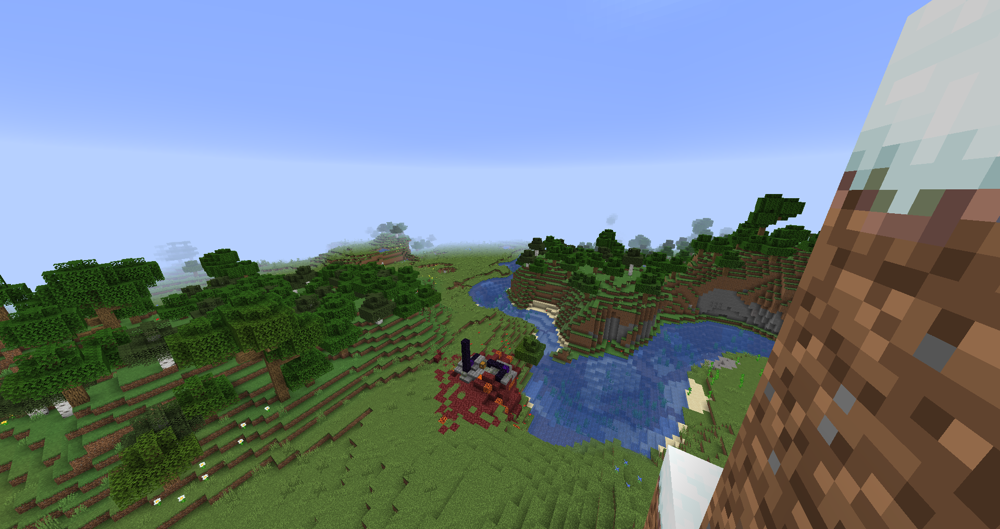
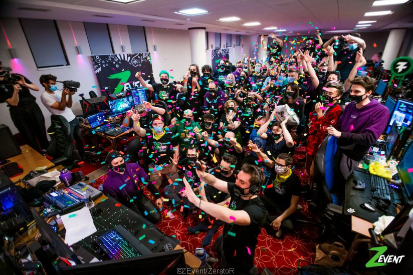

Animaux :
- Étant le plus rapide
- Le plus rapide dans les airs
- Le plus rapide en mer
- Étant le plus long
- Le plus mortel
- Ayant le plus gros cerveau
- Étant le plus fort
- Étant le plus lourd
- Sautant le plus loin
- Parcourant le plus de distance dans sa vie
- Ayant le plus long pénis par rapport à sa taille
- Avec la piqûre la plus douloureuse
- Ayant les plus grands yeux
- La plus longue durée de vie
- Volant le plus longtemps
Nature :
- Record du col de montagne le plus élevée
- Record de la route la plus haute
- Record de l'endroit habité le plus froid
- Record de la mine la plus profonde
- Record du point sur la terre le plus profond
- Record de la plus épaisse couche de glace
- Record de l'endroit ou les températures sont les plus basses
- Record de la terre la plus septentrionale du monde
- Record de l'endroit habité le plus chaud
- Record de les parois rocheuse les plus grandes
- Record de la cavité naturelle la plus profonde
- Record de l'endroit habité le plus isolé de la planète
- Record de l'endroit avec la température la plus chaude
- Record de la ville la plus haute du monde
- Record de l'endroit le plus sec
Sport :
- Record du tour monde en 45 jours
- Record du plus haut saut à la perche
- Record de médailles olympiques en natation
- Record du plus grand gagnant du Tour de France
- Record du plus rapide sur 100 et sur 200 mètres
- Record du nombre de buts inscrit en une année
- Record de buts en liga
- Record sur 400 mètres
- Record de points marqué durant sa carrière
- 5 Champions Leagues consécutifs
- Record de victoire en une saison NBA
- 5 buts en 9 minutes
- Record de trophée au football en tout
- un but à 91,9 mètres
- 1500 mètres dame en 3 min 50 s 07
Particularités :
- La plus grande bouche
- Record des ongles les plus long du monde
- Le plus long nez au monde
- L'homme le plus tatoué, Lucky Diamond Rich
- Les plus longs cheveux du monde
- Les plus longs poils d’oreilles
- La plus grande langue
- La plus longue barbe
- Les plus grands globes oculaires
- Les plus longues jambes
- Les plus gros biceps du monde
- La femme la plus petite du monde
- La taille la plus fine du monde
- La fille la plus poilue du monde
- La plus grosse poitrine naturelle du monde
Insolite :
- Record des plus grosses paire de cornes
- Record du plus jeune DJ de club
- Record du plus grand nombre de rubiks cube résolu
- Record de l'œuvre vendue la plus chère aux enchères
- Record du plus long séjour au sommet d'un mât
- Record de la plus grande moto pilotable
- Record du nombre de buts marqué par un joueur au mondial de football
- Record de la plus grande réplique de décor en Lego
- Record: la « vampire mexicaine »
- Record du youtuber le mieux payé au monde
- Record: cimetière de Wadi al-Salaam
- Record de la plus jeune personne à avoir fusionné 2 atomes de deutérium
- Record du plus grand orchestre
- Record de la plus jeune femme à barbe
- Record de la plus veille personne a faire un saut en parachute
Célébrité :
- Jennifer Aniston
- Cristiano Ronaldo
- Ariana Grande
- Eminem
- Ellen DeGeneres
- Jennifer Lawrence
- Justin Bieber
- Taylor Swift
- Alex Rodriguez
- Jackie Chan
- Dolly Parton
- Katy Perry
- Ed Sheeran
- Sam Smith
- Hiroyuki Terada
Jeux Vidéos
- Un salaire conséquent
- Un budget digne d'un film d'hollywood
- Un succés Mondial
- une partie de jeu vidéo de 572h
- Une partie de JOUST en version arcade
- 138h et 34 secondes de JUST DANCE 2015
- Du Call Of Duty pendant des heures
- La collection ultime
- Un rassemblement pour la bonne cause
- Un score à 19 chifffres sur GIGA WING 2
- 169 Victoires d'affilées sur STREET FIGHTER IV
- Super Mario Bros. en moins de 5min
- Speedrun de GTA, 53 MINUTES ET 29 SECONDES PAR MHMD_FVC
- Speedrun de SUPER MEAT BOY,17 MINUTES ET 43 SECONDES PAR VORPAL
- Speedrun de SKYRIM, 35 MINUTES ET 20 SECONDES PAR I_NEED_A_DOCTOR
- Speedrun de DOOM 2 : HELL ON EARTH, 19 MINUTES ET 59 SECONDES PAR ZERO-MASTER
- Speedrun de DISHONORED, 33 MINUTES ET 59 SECONDES PAR MRWALRUS
- Speedrun de PORTAL 1, 7 MINUTES ET 54 SECONDES PAR IMANEX
- Speedrun de ZELDA : OCARINA OF TIME, 17 MINUTES ET 45 SECONDES PAR SKATER82297
- Speedrun de HALF-LIFE, 20 MINUTES ET 41 SECONDES PAR QUADRAZID
Record Jeux Vidéos
Le monde du jeu vidéo est vaste et propose de nombreux records; qu'il soit d'ordre financier, de moyen humain, de temps de jeu hallucinant ou encore complètement insolite. Cependant, certains de ces records sont dangereux et de ce fait encadrés.
Un salaire conséquent
Le 28 juillet 2019 à lieu la première coupe du monde de Fornite. De nombreux joueur, spectateurs sont présent etparticipe a cette evenement Mondial. Un jeune joueur ce démarque et atteind la plus haute place du podium : Kyle Giersdorf alias Bugha. Il devient alors champion du monde et ainsi reçoit tout les gains promis au vainqueur du tournoi ; 3 000 000 $ (2 421 270 £, 2 694 690 €). Il s'agit là du plus important paiment pour un seul joueur
Un budget digne d'un film d'hollywood
C’est l’un des jeux les plus marquants de ces dernières années. Après un premier opus très apprécié des joueurs, Red Dead Redemption II, sorti en 2018, était très attendu et son développement sur huit ans promettait une nouvelle aventure incroyable au temps des cowboys. En tout, ce sont plus de 800 millions de dollars qui ont été engloutis pour le développement du jeu de Rockstar Games, avec plus de 3 000 personnes qui ont travaillé dessus depuis 2010.
Un succés Mondial
Minecraft, apparu dans les années 2010 dans le monde du jeu vidéo. En à peine quelques années, il s’est placé en première position des jeux les plus vendus de l’histoire, toutes plateformes confondues; sortie sur de nombreuses consoles consoles portable et ordinateur. il s'impose comme un jeu incontournable et connu de tous. Un monde cubique où la seul limite est notre imagination. Sur son site officiel, Microsoft dévoile un chiffre impressionnant : « À ce jour, 200 millions de copies de Minecraft ont été vendues et 126 millions de joueuses et de joueurs jouent au titre tous les mois.»
Une partie de jeu vidéo de 572h
572 : c’est le nombre d’heures que le streamer Andrew Bodine, surnommé GiantWaffle, a passé à jouer pour battre le record du monde de la plus longue partie de jeux vidéo, a rapporté Kotaku ce 1er décembre 2019. C’est l’équivalent de plus de 23 jours. (Cependant, Ces records sont encadrés, et soumis à des règles. Ceux et celles qui souhaitent le battre ne jouent en réalité pas en continu : ils ne doivent pas dépasser les 19 heures de jeu par jour. Cette limite a été posée afin d’éviter que les streamers et streameuses ne mettent leur vie en danger. GiantWaffle s’est longtemps entraîné avant de tenter de battre ce record. Il a notamment dû travailler sur son rythme de sommeil durant 7 mois, afin de pouvoir se reposer suffisamment durant son mois de jeu : il n’y dormait qu’entre 3 heures et 5 heures par jour.)
Une partie de JOUST en version arcade
Un record qui vient de loin : James Vollandt, un Américain, a joué pendant 67 heures et 34 minutes à Joust sur borne d'arcade. Le record a été établi en 1985 ! C'est pendant près de 3 jours, du 5 au 8 juillet 1985, que l'homme a joué au jeu. Au moins, il n'aura pas perdu son argent.
138h et 34 secondes de JUST DANCE 2015
À mi-chemin entre sports et jeux vidéo, on trouve ce record étonnant. Détenu par Carrie Swidecki, c'est une performance pour la bonne cause : elle récoltait de l'argent pour une œuvre de charité. Après avoir dansé presque 140 heures (du 11 au 17 juillet 2015 !) sur Just Dance 2015
Du Call of Duty pendant des heures
Okan Kaja a joué pendant 135 heures à Call of Duty : Black Ops II. Attention, l'australien bénéficiait tout de même d'une pause de 10 minutes après chaque heure de jeu, une règle de sécurité mise en place après la mort d'un jeune homme de 18 ans qui tentait de battre un record sur Diablo 3. Il a vécu au sein de la communauté de Call of Duty du 13 au 19 novembre 2012
La collection ultime
L'idéal pour jouer aux jeux vidéo, c'est quand même de les posséder, non ? C'est Michael Thomasson qui possédait le record de la plus grande collection au monde, avec plus de 11 000 titres. Collection qu'il a depuis vendu à un inconnu répondant au pseudo de "peeps_10091970" pour 750 000 dollars, soit prêt de 550 000 euros. De quoi faire baver n'importe quel joueur ! Vous pourrez apercevoir la collection avant que Michael s'en sépare dans la vidéo ci-dessous.
Un rassemblement pour la bonne cause
Z Event est un projet caritatif créé par Adrien Nougaret et Alexandre Dachary. Le but est de rassembler plusieurs animateurs spécialisés dans le streaming de jeux vidéo sur internet pour un marathon s’étalant sur tout un week-end. Pendant plus de 50h, les participants diffusent du contenu en direct tous ensemble et encouragent les spectateurs à se mobiliser pour soutenir une association caritative.
Cela peut paraitre normal et ne pas figurer dans nos différents record, cependant, sous ce rassemblement il y a bien un exploit un double record pour etre précis. En 2019, du 20 au 23 septembre, le Zevent, lors du 4ième évênement, soutient l'Institut pasteur et lance ça collecte de dons À travers des stream pendant un wekkend entier, près de 50h. Au cours de cette evenement il recolte 3 509 878€ et établi un nouveau record mondial; le zevent devient l'évênement ayant récolté le plus de dons Un ans plus tard, en 2020, du 16 au 18 octobre, lors d'une fin d'année compliqué et masqué, pour soutenir Amnesty international, le Zevent est de retour et une fois encore il réalise l'impossible; Il se hisse en haut du podium et dépasse une nouvelle fois le record établi un an plus tot,au travers de ce long week-end, le Zevent réussi à collecter 5 724 377€,un nouveau record mondial.
Un score à 19 chifffres sur GIGA WING 2
C'est un des scores les plus élevés au monde : 2,181,619,994,299,256,480 points sur le jeu GigaWings 2 par l'américain J.C. Padilla. Bien sûr, le jeu possède un système de point un peu différent des classiques Shoot'em up grâce auquel il est aisé de faire un score très élevé, mais cette prouesse vaut le détour!
169 Victoires d'affilées sur STREET FIGHTER IV
C'est l’anglais Ryan Hart qui détient ce record, obtenu dans un magasin GAME. Il jouait Sagat à chaque partie, et ne fut battu que deux fois au premier round par des Ryu (une partie se déroulant en 3 rounds généralement) lors du 28 et 44ème round. Il a ensuite enchaîné les 125 parties restantes sans perdre à nouveau !
Super Mario Bros. en moins de 5min
Darbian détient actuellement un record mondial : finir Super Mario Bros sur NES le plus rapidement possible. Et il l'a fait en 4 minutes, 57 secondes et 260 millisecondes ! Un chef d’œuvre de timing.
GTA : VICE CITY, 53 MINUTES ET 29 SECONDES PAR MHMD_FVC
On ne présente plus ce jeu plein de références et secrets à foison. Mais ce n'est pas ce qui nous intéresse aujourd'hui. Mhmd_FVC détient actuellement le record du monde pour le speedrun Any% (terminer le jeu le plus vite possible, sans prendre en compte le % d'objectifs réalisés) et c'est un plaisir à regarder. Manipulation des cinématiques, parcours calculé au moindre détail, cette run sur PC avec la version japonaise du jeu (qui réduit les risques de crash lors de la réalisation de certains glitchs) est le fruit d'un travail acharné.
SUPER MEAT BOY, 17 MINUTES ET 43 SECONDES PAR VORPAL
Le Die & Retry par excellence a naturellement lui aussi le droit à ses speedruns. Là ou le commun des mortels devra mourir, mourir et mourir encore avant de passer un obstacle, Vorpal met la gomme et termine le jeu avec très peu d'erreurs et une seule mort. Un record encore perfectible, mais impressionnant ! Outre les "skips" (passer une partie du jeu ou d'une cinématique), un des principaux glitchs utilisé dans cette run est une combinaison de touches mêlant le bouton de saut et celui de pause, activant un bug qui permet de sauter en continu.
SKYRIM, 35 MINUTES ET 20 SECONDES PAR I_NEED_A_DOCTOR
Même si finir Skyrim le plus rapidement possible est en soi une hérésie tant le jeu regorge de quêtes secondaires intéressantes, boucler la quête principale et sauver Bordeciel en une trentaine de minutes n'est pas rien. Entre le "Infinite Sprint", le "Scroll Duping" qui permet de dupliquer des parchemins de sorts ou encore le célèbre "Bucket Glitch" (à 41:10), cette run regorge de manipulations diverses ! On aurait presque mal au cœur pour ce pauvre Alduin.
DOOM 2 : HELL ON EARTH, 19 MINUTES ET 59 SECONDES PAR ZERO-MASTER
30 niveaux de Doom 2 en difficulté Ultra-Violence, rien que ça. Il n'est pas question ici de TAS (Tool Assisted Speedrun, à savoir une run "scriptée" où les actions sont programmées et non effectuées par le joueur), mais bien d'une run authentique, en Single Segment (d'une traite) sur PC. Zero-Master reste néanmoins convaincu que ce record mérite d'être amélioré, tant Doom 2 est imprévisible : certains monstres se placent sur le chemin du joueur, lui faisant perdre de précieuses millisecondes ! On verra s'il sera possible de tenter un record du même genre sur le nouveau Doom qui arrive très bientôt
DISHONORED, 33 MINUTES ET 59 SECONDES PAR MRWALRUS
Sorti en 2012, le jeu signé Arkane Studios réunit un nombre assez conséquent de speedrunners, et ce dans des catégories différentes : Any%, Non-Lethal (sans tuer un seul humain de plus que les cibles obligatoires) ou encore 100%. Ici, c'est le record du monde Any% de MrWalrus qui nous intéresse, avec au programme des skips d'objectifs et des niveaux traversés en quelques minutes grâce au pouvoir "Clignement" amélioré. Côté glitchs, on retrouve notamment l'"Elevator glitch" qui permet de se propulser en l'air et de nombreux OOB (Out Of Bounds, c'est à dire sortir du niveau via des bugs de collisions, etc). Une run très nerveuse !
PORTAL 1, 7 MINUTES ET 54 SECONDES PAR IMANEX
Une run un peu particulière car réalisée par quatre joueurs, Imanex principalement, mais aussi z1mb0bw4y, SullyJHF et Gocnak. Encore une fois, du très beau travail dans cette vidéo où les OOB permettent de compléter la plupart des salles de test en un rien de temps. Utilisant les failles du gameplay de Portal, cette run va vous donner le tournis ! Les joueurs utilisent de nombreux bugs de collision pour tirer des portails à des endroits normalement inaccessibles. On peine à comprendre la moitié de ce qui se passe à l'écran, mais cela reste néanmoins impressionnant !
ZELDA : OCARINA OF TIME, 17 MINUTES ET 45 SECONDES PAR SKATER82297
Un des plus célèbres opus de la franchise Zelda a été littéralement torturé par les speedrunners. D'innombrables glitchs ont été découverts, mais c'est la technique du "Wrong Warp" qui permet un tel gain de temps. En manipulant la destination du portail bleu à la fin de l'arbre Mojo, après avoir battu la reine Gohma, les joueurs sont capables de se téléporter non pas à la sortie du donjon, mais dans la tour de Ganon, autrement dit à la fin du jeu ! Il ne reste plus qu'à s'échapper de la tour et affronter une dernière fois Ganon (avec d'autres glitchs bien sûr) et voilà, le jeu est terminé.
HALF-LIFE, 20 MINUTES ET 41 SECONDES PAR QUADRAZID
Une amélioration de 9 minutes par rapport au dernier record, voilà l'exploit que Quadrazid et ses coéquipiers ont réussi à accomplir. En plusieurs segments et assistée par ordinateur (ce qu'on appelle donc un Tool Assisted Speedrun), cette run a le mérite de mettre à mal un des titres phare de Valve. D'une précision extrême, c'est un chef d’œuvre de vitesse et d'optimisation qui vaut le détour. En accumulant de la vitesse via du "Bunnyhopping" (saut en continu) et des bugs de collisions avec certains objets, les runners sont capables de voyager à une vitesse très élevée, traverser de grands espaces en un seul saut ou encore atteindre des endroits inaccessibles. Du grand art, comme cette run de Far Cry 4 en moins de 15 minutes !